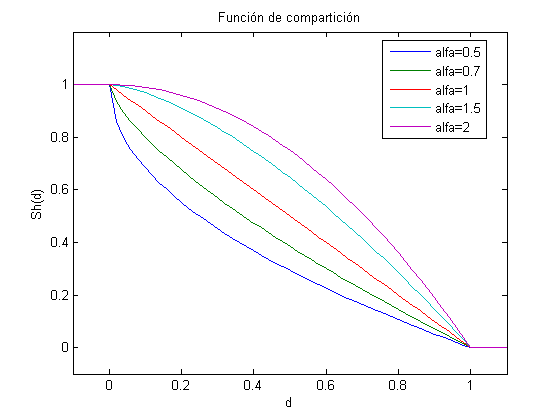
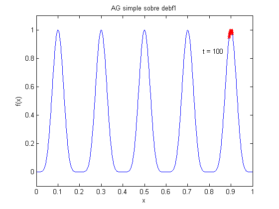
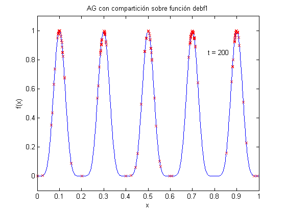
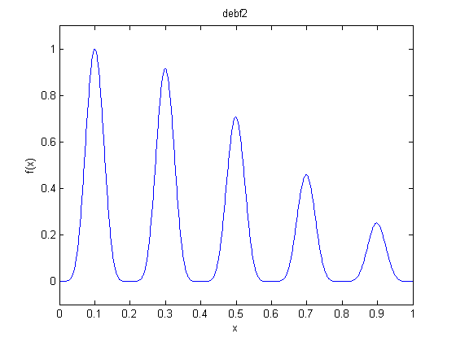
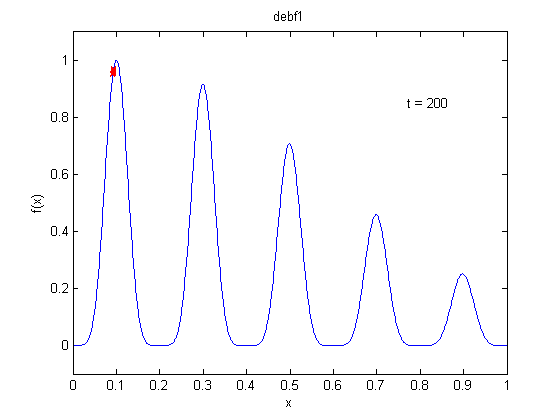
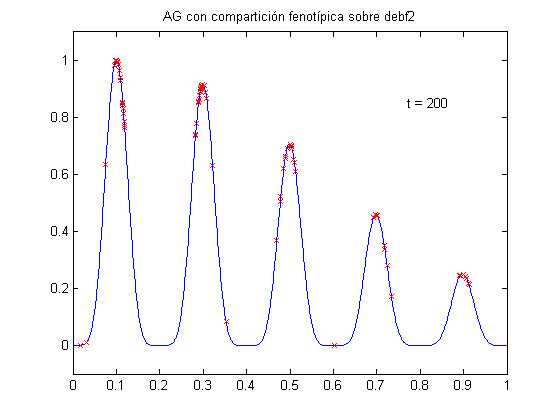
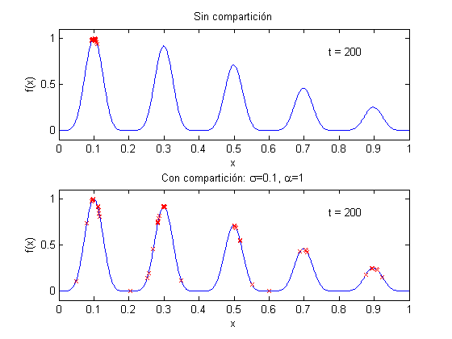

Compartición (sharing)
En este tutorial se hace una breve demostración de compartición.
Contents
Función de compartición
Ésta es una gráfica de la función de compartición para diferentes valores de alpha.
d = -0.1:0.02:1.2; plot(d,Sh(d,1,0.5),d,Sh(d,1,0.7),d,Sh(d,1,1),d,Sh(d,1,1.5),d,Sh(d,1,2)); axis([-0.1 1.1 -0.1 1.2]) xlabel('d') ylabel('Sh(d)') title('Función de compartición') legend('alfa=0.5','alfa=0.7','alfa=1','alfa=1.5','alfa=2','Location','Best')
debf1: función 1 de Deb
La función 1 de Deb tiene varios óptimos uniformemente espaciados.
t = 0:0.001:1; plot(t,debf1(t)) axis([0 1 -0.1 1.1]) title('debf1') xlabel('x') ylabel('f(x)')

Un AG Simple sobre debf1
Optimizamos la función debf1 con un algoritmo genético de reales con un segmento de 30 bits, pm=0.0 y pc=0.9. Utilizamos un AG simple con selección proporcional (SUS) y lo corremos por 200 generaciones. La población converge a uno de los óptimos en forma aleatoria.
p = population('real',[0 1],30,0,0.9); p = random(p,100); generaciones = 100; p = evaluate(p,@debf1); for i=1:generaciones p = sus(p); p = crossover(p); p = mutation(p); p = evaluate(p,@debf1); plot(t,debf1(t)) axis([0 1 -0.1 1.1]) title('AG simple sobre debf1') xlabel('x') ylabel('f(x)') hold on plot(p); str = sprintf('t = %d',i); text(0.77,0.85,str) hold off pause(0.03) end
Un AG con sharing fenotípico sobre debf1
Ahora agregamos sharing fenotípico al algoritmo genético. Fijamos sigma=1.
p = population('real',[0 1],30,0,0.9); p = random(p,200); generaciones = 200; p = evaluate(p,@debf1); for i=1:generaciones p = share(p,0.1,'phenotypic'); p = sus(p); p = crossover(p); p = mutation(p); p = evaluate(p,@debf1); plot(t,debf1(t)) axis([0 1 -0.1 1.1]) title('AG con compartición sobre función debf1') xlabel('x') ylabel('f(x)') hold on plot(p); str = sprintf('t = %d',i); text(0.77,0.85,str) hold off pause(0.03) end
debf2: función 2 de Deb
La función 2 de Deb tiene varios máximos uniformemente espaciados
t = 0:0.001:1; plot(t,debf2(t)) axis([0 1 -0.1 1.1]) title('debf2') xlabel('x') ylabel('f(x)')
Un AG Simple sobre debf2
Optimizamos la función debf2 con un algoritmo genético de reales con un segmento de 30 bits, pm=0.0 y pc=0.9. Utilizamos un AG simple con selección proporcional (SUS) y lo corremos por 200 generaciones. La población converge a uno de los óptimos en forma aleatoria.
p = population('real',[0 1],30,0,0.9); p = random(p,100); generaciones = 200; p = evaluate(p,@debf2); for i=1:generaciones p = sus(p); p = crossover(p); p = mutation(p); p = evaluate(p,@debf2); plot(t,debf2(t)) axis([0 1 -0.1 1.1]) title('debf1') xlabel('x') ylabel('f(x)') hold on plot(p); str = sprintf('t = %d',i); text(0.77,0.85,str) hold off pause(0.03) end
Un AG con compartición fenotípica sobre debf2
Ahora agregamos sharing fenotípico al algoritmo genético. Fijamos sigma=1.
p = population('real',[0 1],30,0,0.9); p = random(p,100); generaciones = 200; p = evaluate(p,@debf2); for i=1:generaciones p = share(p,0.1,'phenotypic'); p = sus(p); p = crossover(p); p = mutation(p); p = evaluate(p,@debf2); plot(t,debf2(t)) axis([0 1 -0.1 1.1]) title('AG con compartición fenotípica sobre debf2') hold on plot(p); str = sprintf('t = %d',i); text(0.77,0.85,str) hold off pause(0.03) end
Comparación lado a lado, con y sin compartición
Finalmente, se presenta la comparación lado a lado.
fcn = @debf2; n = 30; pc = 1; pm = 0.0; generaciones = 200; p1 = population('real',[0 1],n,pm,pc); p2 = population('real',[0 1],n,pm,pc); p1 = random(p1,100); p2 = random(p2,100); p1 = evaluate(p1,fcn); p2 = evaluate(p2,fcn); for i=1:generaciones p1 = sus(p1); p1 = crossover(p1); p1 = mutation(p1); p1 = evaluate(p1,fcn); p2 = share(p2,0.1,'phenotypic'); p2 = sus(p2); p2 = crossover(p2); p2 = mutation(p2); p2 = evaluate(p2,fcn); subplot(2,1,1) plot(t,fcn(t)) axis([0 1 -0.1 1.1]) title('Sin compartición') xlabel('x') ylabel('f(x)') hold on plot(p1); str = sprintf('t = %d',i); text(0.77,0.85,str) hold off subplot(2,1,2) plot(t,fcn(t)) axis([0 1 -0.1 1.1]) title('Con compartición: \sigma=0.1, \alpha=1') xlabel('x') ylabel('f(x)') hold on plot(p2); str = sprintf('t = %d',i); text(0.77,0.85,str) hold off pause(0.03) end